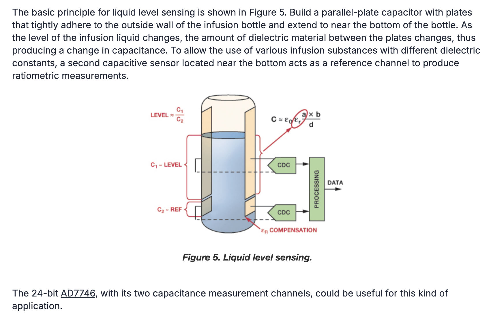
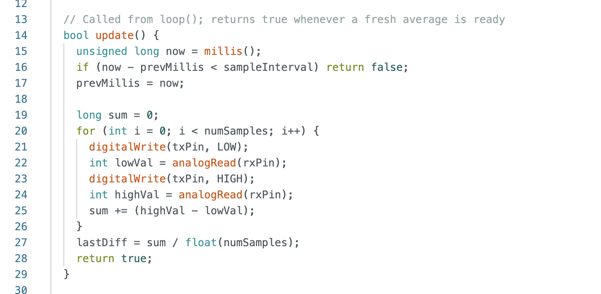
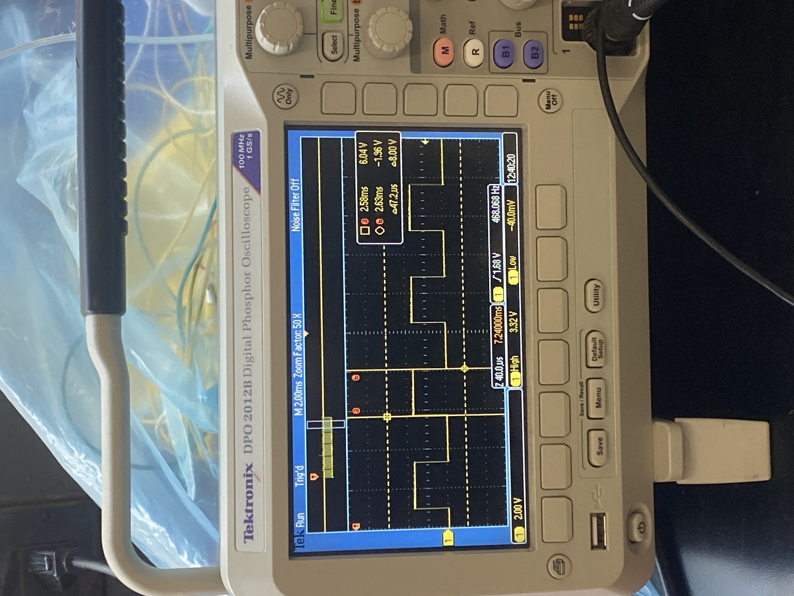

<div class="textcontainer">
<p class="margin"> </p>
<h3>Week 7: Electronic Outputs</h3>
<h4>Assignment: Minimum Viable Product for Final Project</h4>
<video src="./MVP.MOV" style = "width: 65%" controls></video>
<p>This week, we were tasked with making a minimum viable product for our final project with a few required components. My final project is to make a fog harvestor: its basic mechanics involve a frame, a mesh tiled material strung between the frame that captures water droplets from the fog,
a collection trough at the bottom of the mesh that gathers the water droplets, a container/water sensor that stores the collected and can detect when the container is getting full, and an led that lights up when that happens. </p>
<p>I also wanted to make my MVP on a smaller scale size-wise than my final project. </p>
<p>Frame: I laser cut some rectangles from the 6mm plywood and assembled it with hot glue.</p>
<p>Tile: For the MVP, I just wanted a tile with a hydrophobic surface that would bead up with water super easily to just test the physical mechanics of the droplets -> trough -> container. Becuase the lab has yet to find/get a fog machine, I was just planning to
spray water from a squeeze bottle at the surface was planning to test, and wasn't concerned with the tile's ability to process the fog. Thus, I just 3D-printed out a 120mm x 120mm tile (I was unaware that the lab had acrylic available for laser cutting) and almost broke a hole puncher getting
to create an opening near the top to hang it to the frame. Over the next few weeks, and after the addition of a fog machine, I hope to experiement with kerf on plywood as well as different 3D print designs to figure out which is the most efficient at fog harvesting.</p>
<p>Collection Trough: I designed a small trough in Fusion 360 then 3D printed it out. The design had wings with holes for zip ties to go through to attatch the trough to the sides of the frame, but I realized that the holes were too small for zip ties, and so ended up using thread and hot glue instead. During the Fusion modeling process, I
worked with tools like shell for the first time.</p>
<p>Container/Water Sensor/LED: I wanted to make a capacitative water level sensor using copper tape and the arduino. At first, I started by cutting a plastic cup shorter so as to fit the harvester's frame and attatching copper plate to its sides. However, the two sides were too far apart for the capacitor setup to work.
Jess helped me find a smaller squeeze bottle in the lab that I switched too. Then, I tried to wire it up so that two copper tapes, ground to each, etc. I'm still unsure what exactly was wrong with my wiring, or if it was the code, but the sensor wasn't giving any different readings even when water was added. I ended up changing this to go back to the more basic TX-RX sensor, which although
very janky and a bit inconsistent, worked at a baseline. I also coded the sensor to outpit the averages of a few readings to the monitor to limit spikes and allowed for the user to calibrate the water level by entering 'e' into the monitor when the bottle was empty and 'f' when it was full. Finally, I wired up an LED to my breadboard that would light up when the water level exceeded 70 percent threshold.
Although I used a pretty low resistor value, the LED still isn't the brightest, but is detailed below, along with my code and serial monitor readings.</p>
<p>
<p></p>
<p></p>
<video src="./monitor.MOV" style = "width: 65%" controls></video>
<video src="./sensor working.MOV" style = "width: 65%" controls></video>
<p>Things to work on:
1. I want to build a much more reliable water level sensor. These are some videos that I hope to reference. Interested in working with alumninum instead of copper or using the lab's lamination machine if continuing with copper tapes.
<a href="https://www.youtube.com/watch?v=40TjjWLljaU&list=LL">https://www.youtube.com/watch?v=40TjjWLljaU&list=LL</a>
<a href="https://www.youtube.com/watch?v=Z-1X4IoChiY&list=LL&index=3">https://www.youtube.com/watch?v=Z-1X4IoChiY&list=LL&index=3</a>
2. Changing the output from the water level sensor from an LED to automatically turning the fog machine off and maybe even sounding an alarm. Something like using a speaker to play out a favorite song would be really fun!
3. Printing out and experimenting with different tile designs and materials to optimize fog harvesting efficiency.
</p>
<h4>Oscilloscope</h4>
<p>I hooked my water capacitative sensor up to the oscilloscope. </p>
<p></p>
<p>From the image, we can see that my water sensor was measuring around 6 in voltage. I
observed the time-domain output from the TX pin of my water-level capacitive sensor circuit. The measured period is approximately 2.4 ms, coonfirming that the output operates on a fixed periodic excitation signal, which drives the TX–RX coupling for the capacitive measurement</p>
</div>